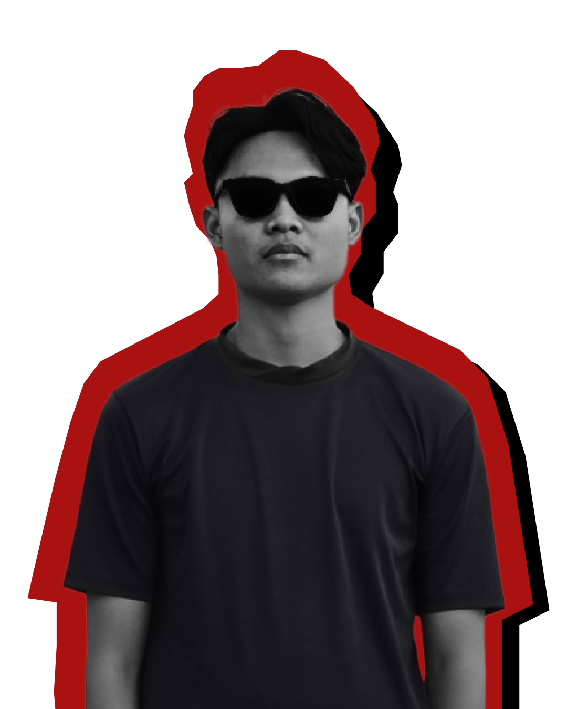

My name Arkan Afarel you can call me Arkan, i'am passionate Web Developer and UI/UX Designer based in Lampung. As a Computer Science student, I spend my time bridging the gap between aesthetic design and robust code. Whether it's wireframing in Figma or styling with CSS, I'm dedicated to creating web applications that are as beautiful as they are functional.
